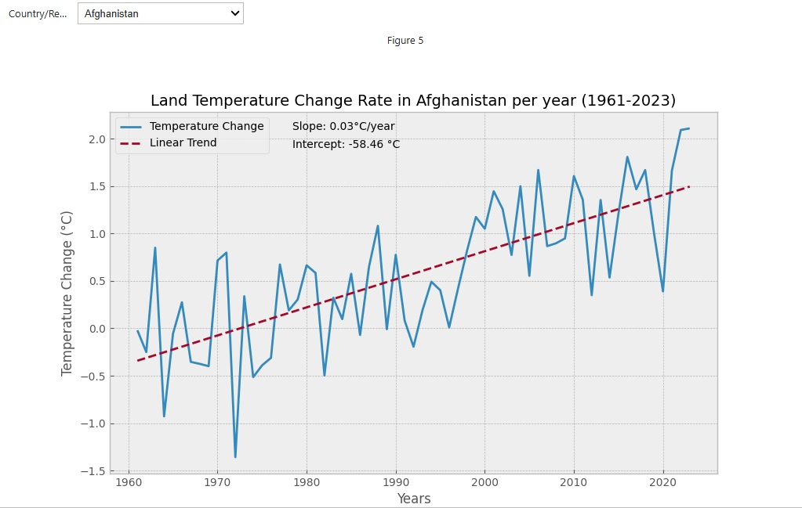

Professional Summary
Highly effective Data Analyst blending scientific discipline with technical expertise in Python, Tableau, and Power BI. I specialize in developing robust data automation solutions and creating dynamic dashboards that transform complex datasets into clear, strategic insights for decision-makers. My analytical mindset, honed through my Botany degree, provides a unique advantage in tackling real-world data challenges.
I am currently expanding into data science through structured self-directed learning and hands-on projects focused on statistics, machine learning, and advanced analytical methods..
Featured Projects
Our Power. Our Planet; A Renewable Energy Story
Designed and deployed an interactive Tableau dashboard visualizing global renewable energy growth, electricity access, and generation sources to highlight the shift toward clean energy.
View Live DashboardSales & Profit Performance Dashboard
Developed an interactive Power BI dashboard to monitor sales, profit, and customer behavior across categories, regions, and time periods. The solution highlights key KPIs such as total sales, profit margin, and total profit, while enabling drill-down analysis by customer name, payment mode, and geography. Designed to provide actionable insights for strategic decision-making, the dashboard helps track business growth, identify high-performing segments, and optimize sales strategies.
Download DashboardNaira-Dollar Rate Automation
Automated real-time retrieval of Naira-Dollar peer-to-peer rates, improving trading efficiency for a CEO by providing timely, actionable forex insights.
View on GitHubInvestigating Temperature Change on Land
Analyzed 60 years of land temperature data, identifying a +1.40°C warming trend and highlighting the link between industrialization and climate policy.
 View on Kaggle